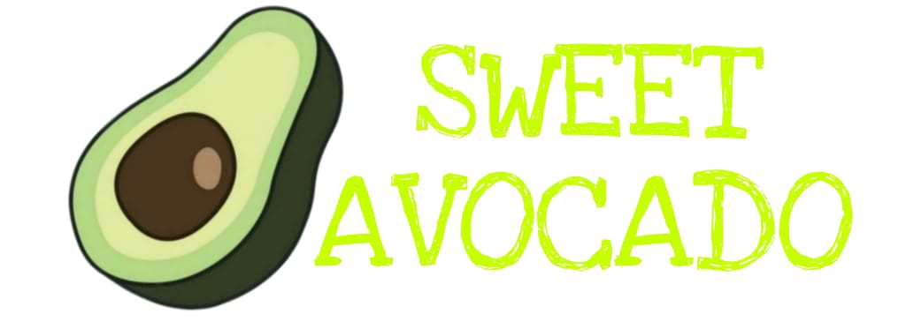

HOME
ABOUT
CUSTOMER
PRODUCTS
CONTACT
SWEET AVOCADO
FROM COLOMBIA TO THE WORLD
Nota. imagen de aguacate en arbol. Tomado de: https://www.pexels.com/es-es/foto/frutos-de-aguacate-colgando-de-un-arbol-3687927/